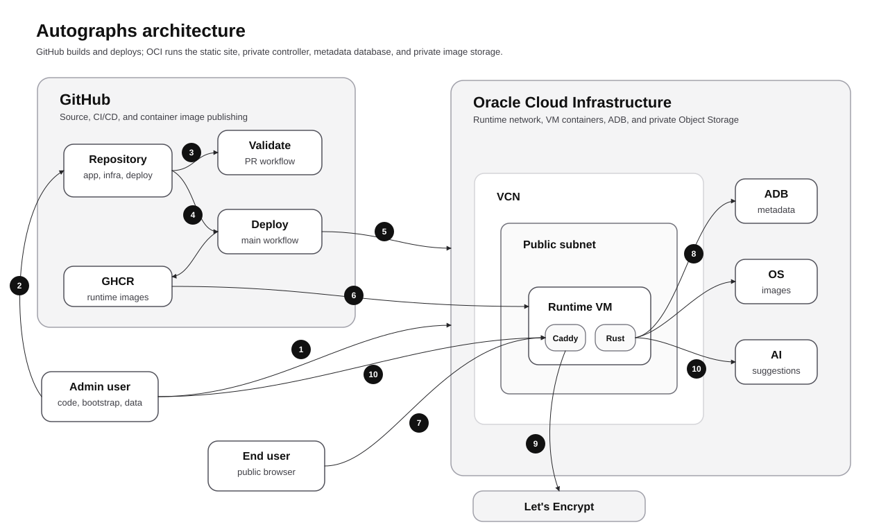

Autographs system overview
The goal is to serve my autograph collection images on a public website using only OCI Free Tier resources and GitHub CI/CD automation for management. This page documents the full target solution: GitHub owns source control, validation, image publishing, and deployment automation; OCI runs the Caddy-served static public site, Rust private controller, Autonomous Database metadata, and private Object Storage media.
System diagram

Numbered flows
Workflow step definitions
| Step | Workflow | Definition |
|---|---|---|
| 1 | Bootstrap tenancy with Terraform | The admin user runs the manual Terraform bootstrap that creates the compartment, deploy identity, policies, and state bucket. |
| 2 | Push code to GitHub | The admin/developer pushes application, infrastructure, and deployment changes to the GitHub repository. |
| 3 | Validate pull requests | Repository changes run the PR validation workflow before merge, including app and infrastructure checks. |
| 4 | Deploy from main | A merge to main starts the deploy workflow that builds the app and prepares the runtime update. |
| 5 | Provision OCI runtime with Terraform | GitHub Actions uses Terraform and the deploy identity to provision or update OCI resources, including the VCN, public subnet, runtime NSG, and VM. |
| 6 | Publish the app image | The deploy workflow publishes a Git-SHA-tagged container image to GHCR for the VM to pull. |
| 7 | Serve public traffic | End users reach Caddy over HTTPS through the public subnet and runtime NSG; Caddy serves the generated static release from the shared static volume. |
| 8 | Read and write private data | The Rust private controller uses controlled server-side paths to access Autonomous Database metadata and private Object Storage images while publishing public-safe static artifacts. |
| 9 | Manage TLS certificates | Caddy uses Let's Encrypt to obtain and renew the public HTTPS certificate for the Autographs domain. |
| 10 | Manage collection content | The Rust private controller and minimal static admin seed/publish path replace the temporary operator bridge; Phase 6 polishes the admin workflow, and Phase 7 later adds advisory AI metadata suggestions. |